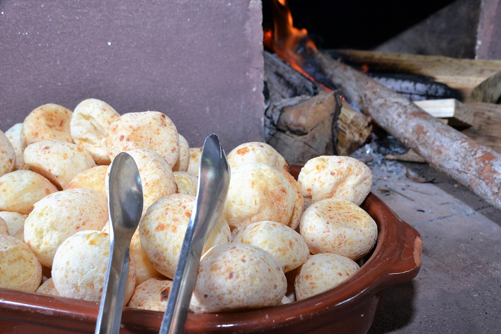

Pão de Queijo

Ingredientes
40 Porções
- 500 g de polvilho doce
- 250 ml de leite integral
- 1 colher (sopa) rasa de sal
- 1 prato cheio (350 g) de queijo meia cura e/ou mussarela ralado no ralador (quanto mais queijo, mais gostoso o pão vai ficar)
- 1 ou 2 ovos
- 1/2 copo de óleo
- 1 Pacote de queijo ralado parmesão
Modo de Preparo
- Primeiro, coloque o leite e o óleo em uma panela pra esquentar, desligue o fogo imediatamente assim que começar a ferver (você verá umas bolinhas do leite subindo).
- Em uma tigela grande, coloque o polvilho e o sal, e misture bem, logo em seguida, despeje o conteúdo da panela ainda quente, misture bem, primeiro com uma colher e depois com a mão.
- Em seguida coloque o queijo ralado e um pouco do queijo do prato e também 1 ovo, continue misturando bem.
- Coloque o resto do queijo e verifique se a massa esta com uma textura boa, nem muito oleosa e nem muito seca
- Se você sentir que está muito seca, coloque outro ovo, se ela ficar oleosa, coloque mais um pouco de polvilho.
- Essa massa deverá soltar da tigela e também da sua mão.
- Experimente a massa e veja se esta boa de sal, algumas pessoas gostam de colocar um pouco mais de sal.
- Agora é só fazer bolinhas e colocar na assadeira, deixando um pequeno espaço entre um pão e o outro.
- Não é necessário untar a assadeira.
- Deixe no forno em temperatura média (230°) até dourar um pouco.
- Dica: se sobrar muito, no outro dia pode tostar em um tostador.